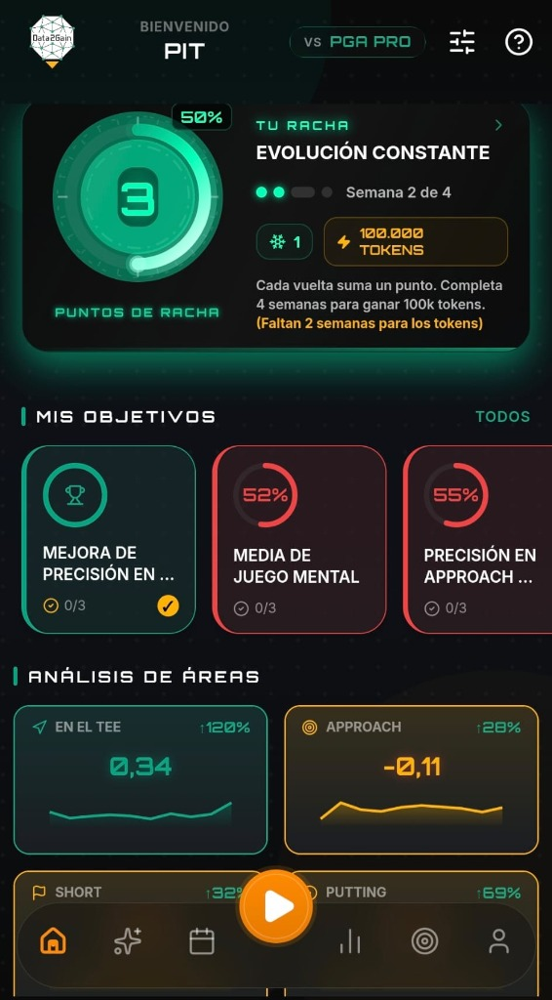
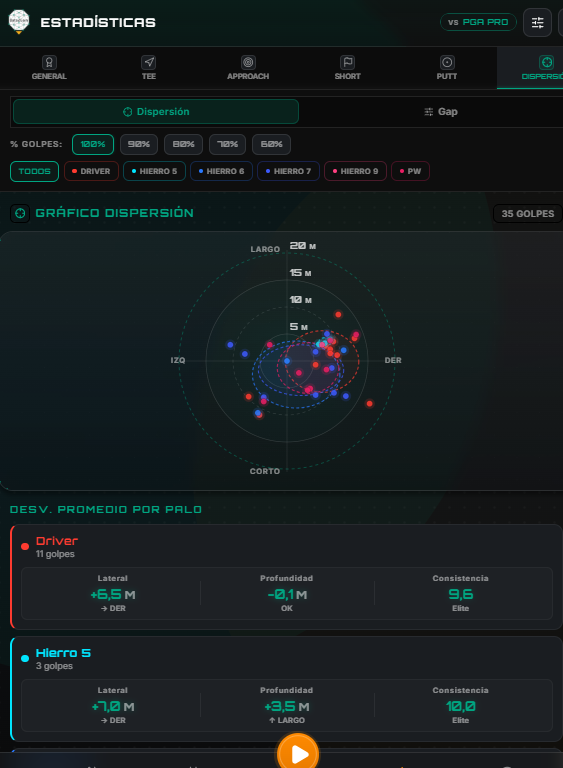
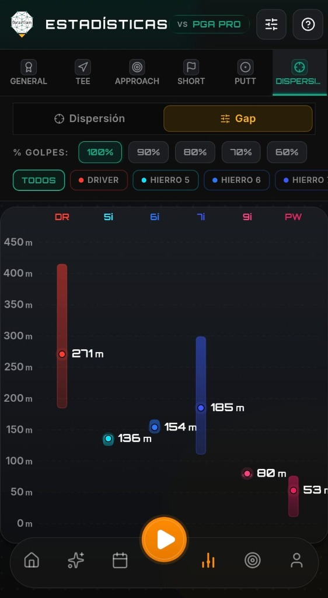
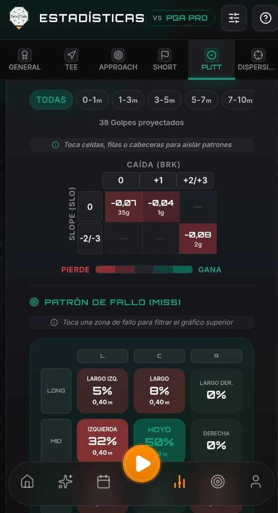
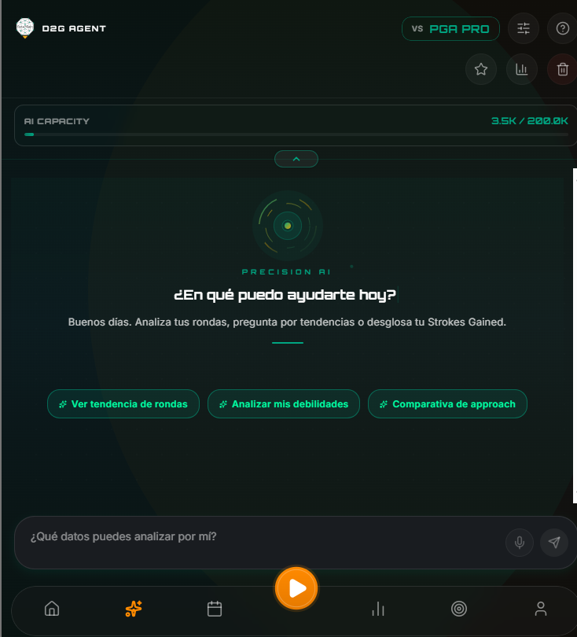
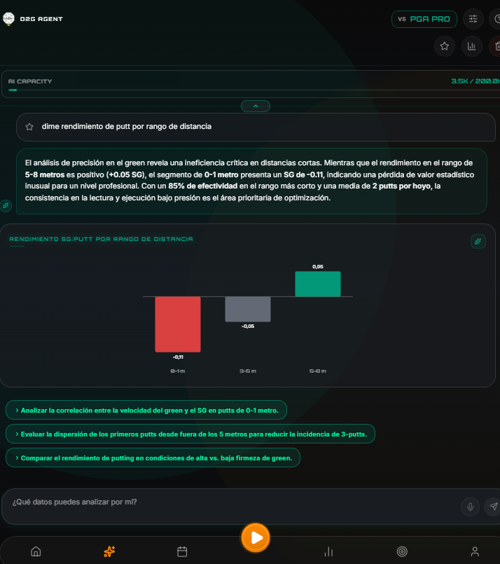

DATA2GAIN
PRECISIÓN DE ÉLITE
Jugaste con intuición.
Ahora juegas con inteligencia.
Inteligencia de Tour. Sin el Tour.
El mismo análisis que usan los circuitos profesionales, alimentado por tus propias rondas. Deja de adivinar qué practicar — tus datos ya lo saben.
Tu juego, de un vistazo
Cuatro áreas, una foto clara. Descubre dónde estás sumando y dónde puedes mejorar.

Conoce tu patrón real
Cada palo cuenta una tendencia. Visualiza tu dispersión real y empieza a apuntar donde los datos te sugieren.

La distancia que crees no es la distancia que tienes.
Tus promedios reales, palo a palo. Identifica los huecos de cobertura que convierten buenas decisiones en malos resultados.

El detalle que marca la diferencia
Tee, Approach, Short y Putt — cada zona analizada en profundidad para que practiques lo que de verdad necesitas.

Una IA que conoce tu juego como tú
Pregúntale lo que quieras. Te responde con tus datos reales, no con consejos genéricos.
Pregunta como hablarías con tu caddie
Tiene acceso a todo tu historial y tendencias. Pídele desde un resumen rápido hasta un análisis profundo de cualquier aspecto.

Respuestas claras, acciones concretas
Gráficas, desgloses y recomendaciones basadas en tus datos. Descubre patrones ocultos y sabe qué practicar.

Mídete contra quien quieras.
Strokes Gained desglosado en las cuatro áreas clave. Compárate con el PGA Tour o con hándicap 0, 5, 10, 15, 20 y 25 — y descubre exactamente dónde ganas y dónde pierdes golpes.
- ✦Tee · Approach · Short Game · Putting
- ✦7 niveles de referencia: PGA Tour + hándicap 0 a 25
- ✦Evolución histórica y tendencias de tu juego
Tecnología que aprende contigo
Modelos de machine learning que se nutren de tus datos reales. Cuanto más juegas, mejor te conoce.
const analyzeDispersion = (shots) => {
const lateral = calcDeviation(shots, 'x');
const depth = calcDeviation(shots, 'y');
return {
consistency: getScore(lateral, depth),
pattern: detectBias(shots),
sg_impact: strokesGained(shots)
};
};
También te acompañamos aquí
Plataforma para coaches
Toda la analítica a disposición de tu entrenador, para diseñar juntos el plan que mejor se adapte a ti.
Consultoría
Te ayudamos a aprovechar mejor cada sesión de práctica y acercarte a tu objetivo de hándicap.
Formación
Workshops para coaches que quieran integrar la estadística y el análisis de datos en su método de enseñanza.